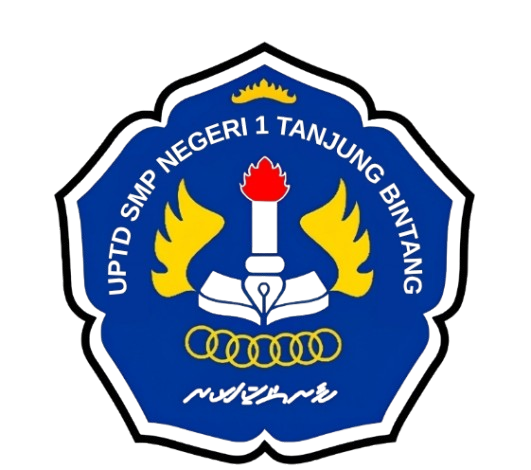
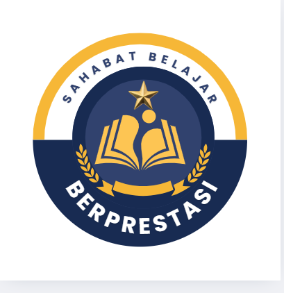

Misi Menyelamatkan Sistem Pencernaan • IPA SMP Kelas VIII


Jadilah penjelajah mikroskopis! Masuki tubuh manusia dengan kendaraan futuristik bersama robot cerdas DIGO untuk menyelamatkan sistem pencernaan!
Pilih misi penjelajahan atau minigame di bawah ini untuk menguji pemahamanmu tentang sistem pencernaan manusia!
Susun kartu organ pencernaan secara berurutan dari mulut hingga anus.
Temukan lokasi organ tubuh yang tepat berdasarkan petunjuk DIGO.
Cocokkan enzim pencernaan dengan zat makanan yang dicernanya.
Simulasi interaktif perjalanan sebutir nasi dari mulut sampai dikeluarkan.
Simulasi percobaan sederhana luas permukaan kunyahan dan air liur.
Kuis pilihan ganda cepat tepat sistem pencernaan manusia.
Analisis kasus kebiasaan sehari-hari dan cara pencegahan gangguannya.
Lihat rekapitulasi nilai, lencana, dan cetak sertifikat kelulusan misi!
Sistem pencernaan adalah sistem organ dalam tubuh manusia yang bertugas menerima makanan, memprosesnya menjadi zat-zat gizi yang dapat diserap, serta mengeluarkan sisa-sisa makanan yang tidak diperlukan oleh tubuh.
Proses mengubah ukuran makanan dari besar menjadi lebih kecil atau halus secara fisik (misalnya dikunyah oleh gigi dan diaduk oleh lambung).
Proses penguraian molekul makanan kompleks menjadi zat-zat yang lebih sederhana dengan bantuan enzim pencernaan.
Menghasilkan cairan empedu yang berfungsi untuk mengemulsikan lemak (memecah lemak menjadi butiran kecil).
Menyimpan dan memekatkan cairan empedu sebelum disalurkan ke usus dua belas jari.
Menghasilkan enzim pencernaan (lipase, tripsin, amilase) serta cairan bikarbonat untuk menetralkan keasaman lambung.
| Nama Enzim | Organ Penghasil / Tempat Kerja | Fungsi Utama |
|---|---|---|
| Amilase (Ptyalin) | Mulut (Kelenjar Ludah) | Memecah amilum (pati) menjadi maltosa/glukosa sederhana. |
| Pepsin | Lambung | Memecah protein menjadi pepton/polipeptida kecil. |
| Lipase | Pankreas & Usus Halus | Memecah lemak menjadi asam lemak dan gliserol. |
| Tripsin | Pankreas (bekerja di usus halus) | Mengubah pepton/protein menjadi asam amino. |
| Maltase | Usus Halus | Mengubah maltosa menjadi glukosa. |
Makanan mengalami pencernaan mekanis & kimiawi di sepanjang saluran ini hingga sari-sarinya diserap di usus halus.
Data di bawah ini diambil secara langsung dari database Supabase Cloud secara real-time.
| No | Nama Siswa | Kelas | Total Poin | Benar / Total | Persentase | Kategori | Level Tertinggi | Lencana | Waktu Selesai |
|---|---|---|---|---|---|---|---|---|---|
| Memuat data dari Supabase Cloud... | |||||||||
Diberikan dengan bangga kepada:
Kelas: -
Telah sukses menyelesaikan seluruh misi penjelajahan mikroskopis sistem pencernaan manusia, menjawab soal evaluasi, dan menunjukkan pemahaman konsep biologi dengan sangat baik!
Total Poin: 0
Jawaban Benar: 0 dari 0 soal
Persentase: 0%
Kategori: Sangat Baik
Level Tertinggi: -
Lencana Diperoleh: -
Robot Pemandu DIGO
AI Educational Assistant
Guru Pengampu IPA SMP
Kurikulum Merdeka / Nasional